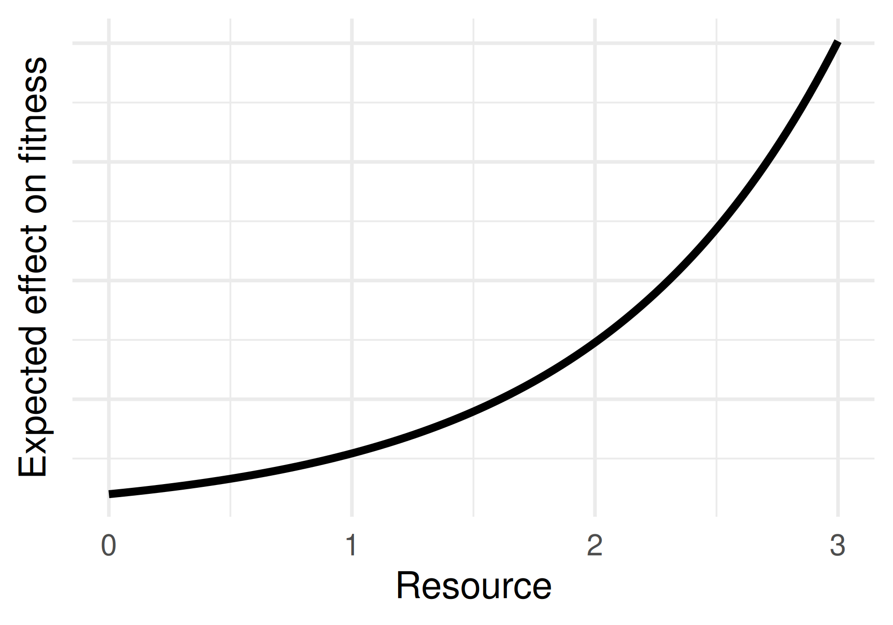
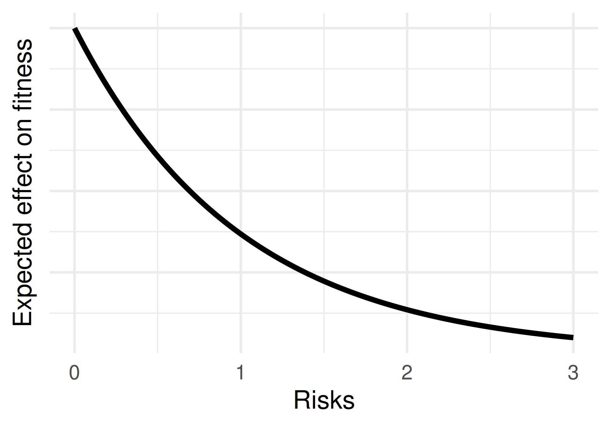
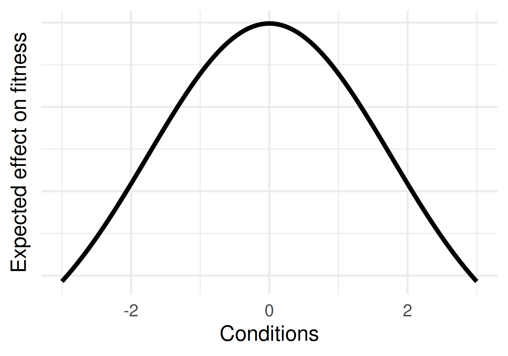
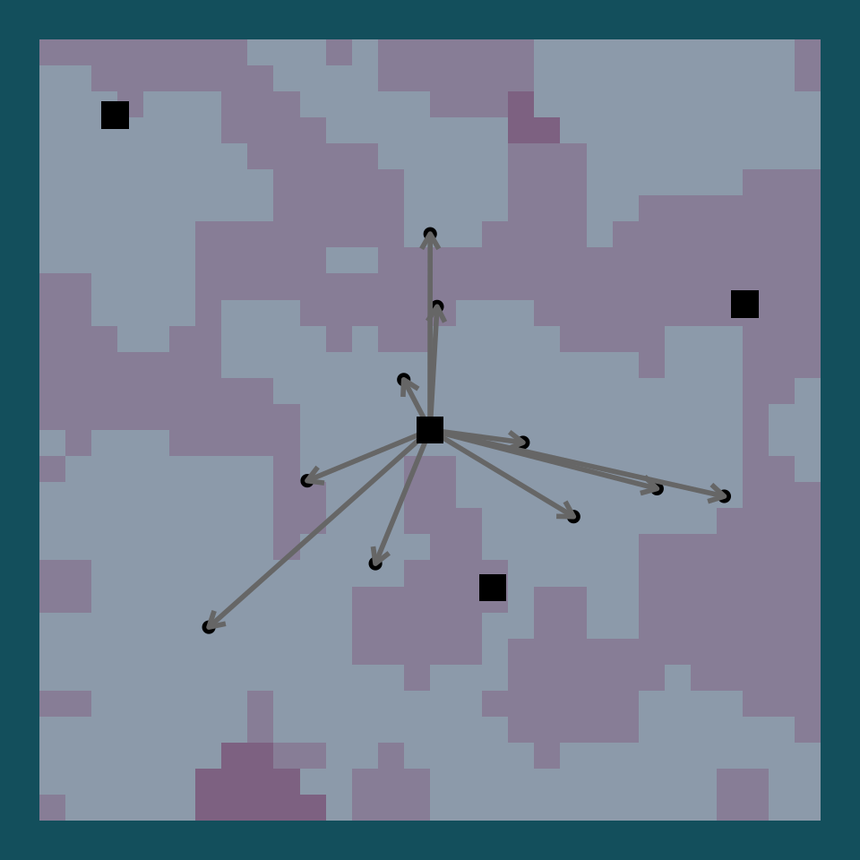
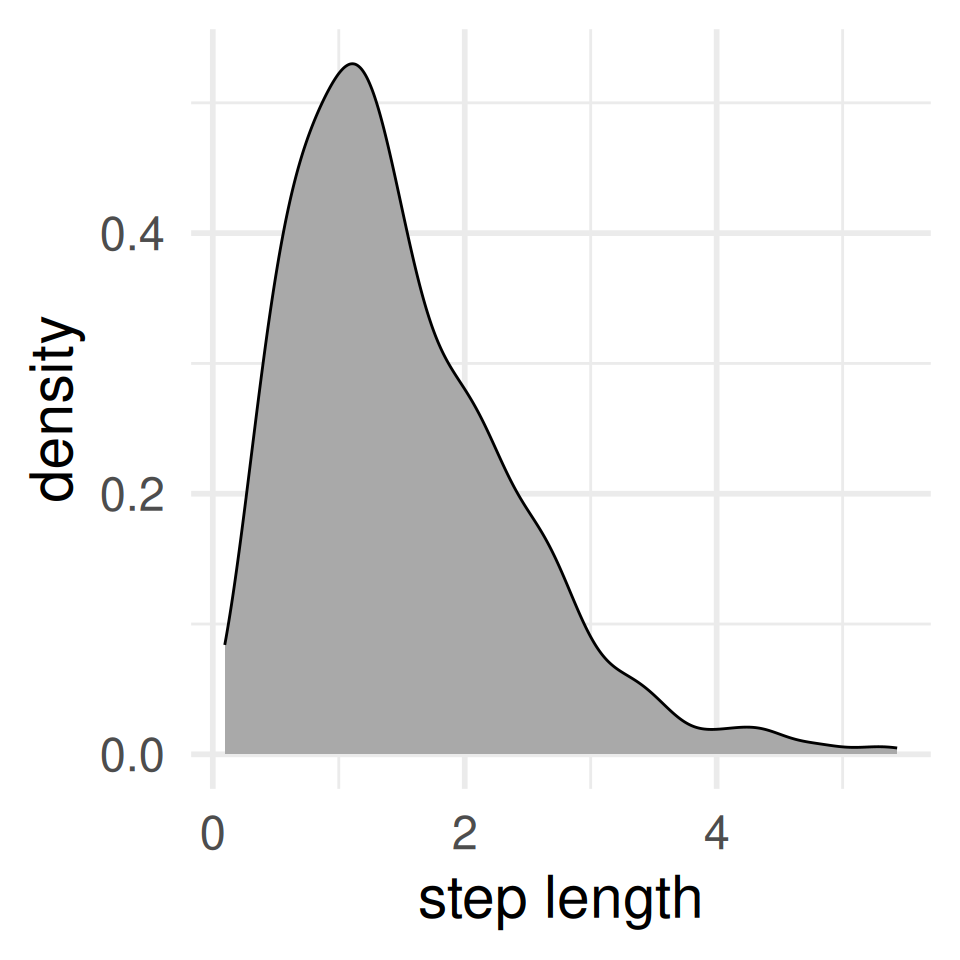
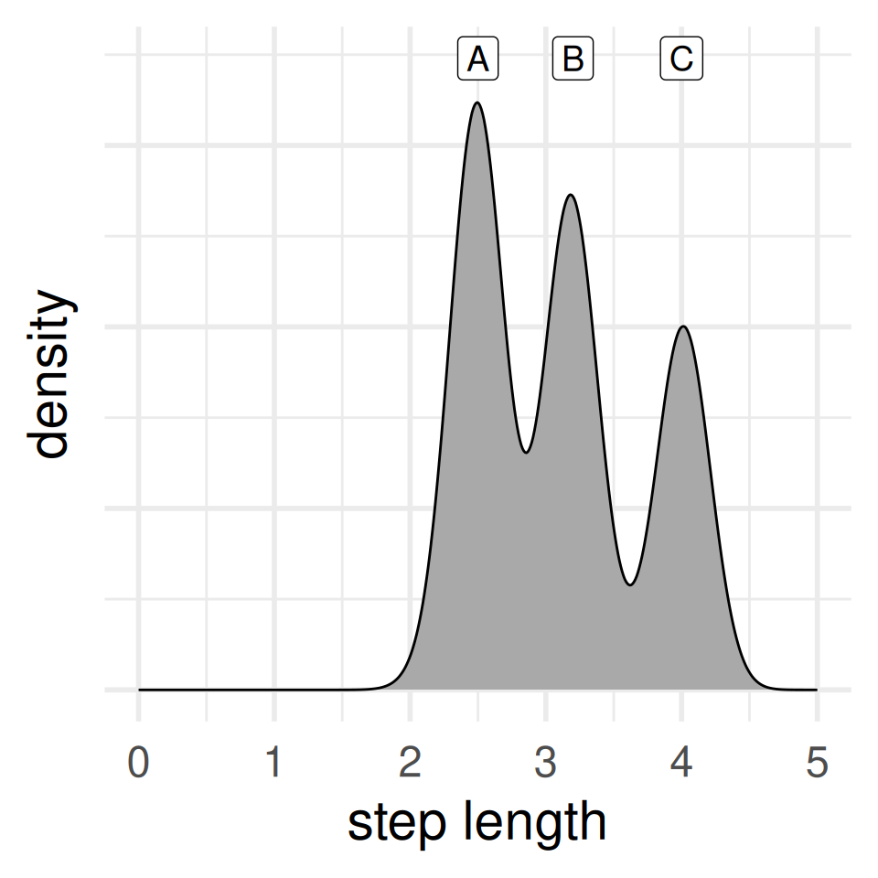
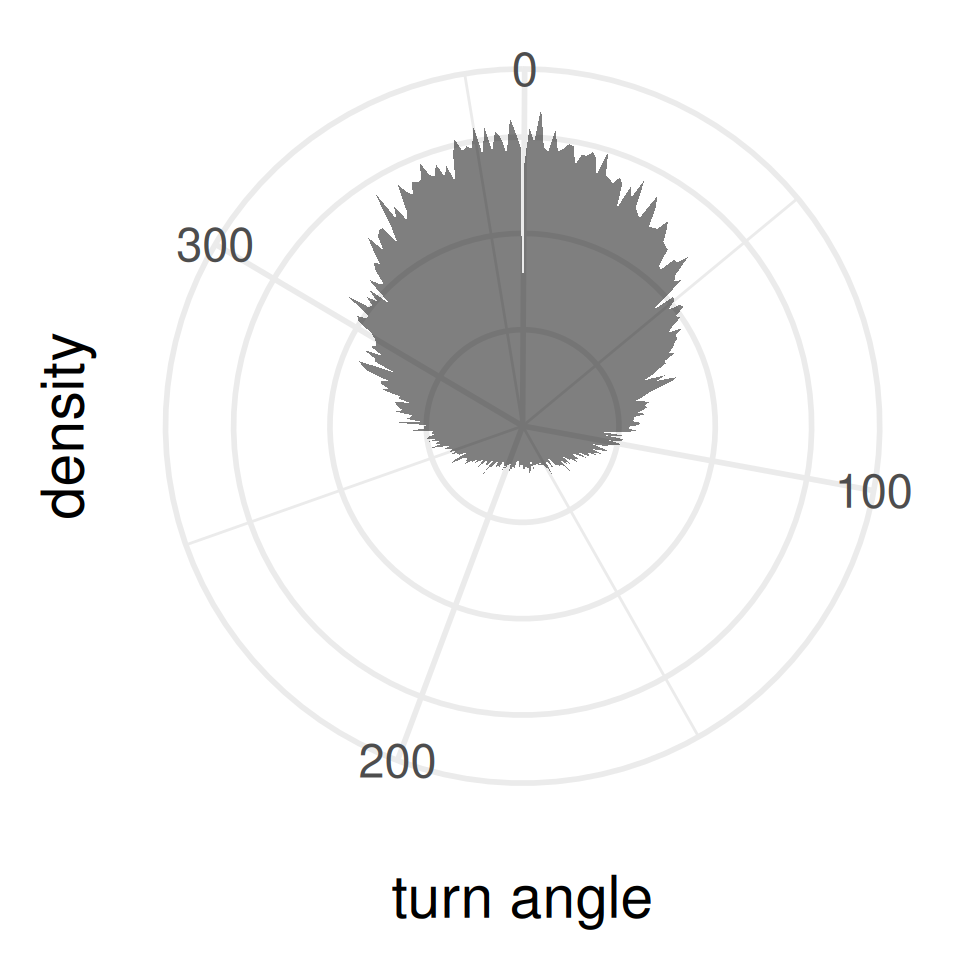
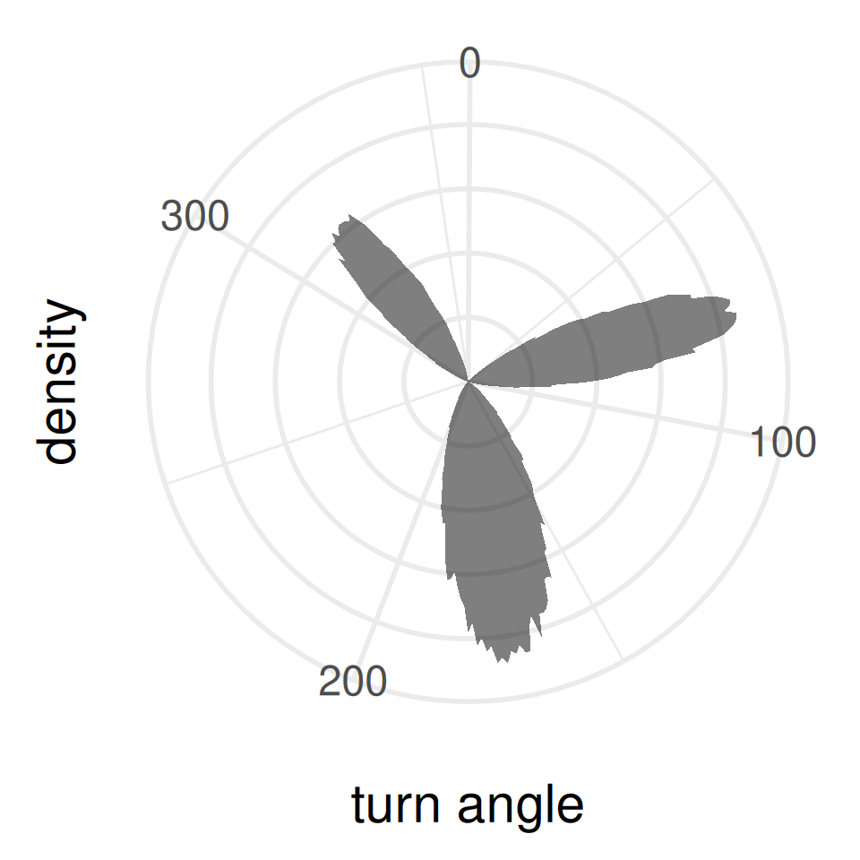

Influence of habitat on resource availability during social foraging
Ph.D. Oral Comprehensive Examination
Alec L. Robitaille
Memorial University of Newfoundland and Labrador
2023-04-17
In the context of frequency-dependent producer-scrounger dynamics, how would one’s role affect access to available resources considering risks and conditions during habitat selection?
In the context of frequency-dependent producer-scrounger dynamics, how would one’s role affect access to available resources considering risks and conditions during habitat selection?
Producers
Scroungers
(Opportunists)
Keynan, O., Ridley, A. R., & Lotem, A. (2015). Social foraging strategies and acquisition of novel foraging skills in cooperatively breeding Arabian babblers. Behavioral Ecology, 26(1), 207-214.
Arabian babblers (Turdoides squamiceps)
Frequency dependence
Payoffs
Penalties
Barnard, C. J., & Sibly, R. M. (1981). Producers and scroungers: a general model and its application to captive flocks of house sparrows. Animal behaviour, 29(2), 543-550.
Objective 1:
Access to resources
depending on role
Producers

Scroungers
Habitats =
Resources +
Risks +
Conditions
Matthiopoulos, J., Fieberg, J. R., & Aarts, G. (2023). Species-Habitat Associations: Spatial data, predictive models, and ecological insights.

E.g. forage patch quality, or resting spaces

E.g. predation, anthropogenic

E.g. temperature, humidity, salinity
Objective 2:
Access to resources
modified* by
risks and conditions
* Dubois, F., & Giraldeau, L. A. (2005). Fighting for resources: the economics of defense and appropriation. Ecology, 86(1), 3-11.
Resources
| Patch quantity | 13 |
| Patch quality | 8 |
| Resting spaces | 0 |
| Nesting spaces | 0 |
Risks
| Predation | 4* |
| Perception of risk | 3 |
| Competition | 1 |
| Anthropogenic | 0 |
| Insects | 0 |
| Disease | 0 |
* Bugnyar, T., and K. Kotrschal. (2002). “Scrounging Tactics in Free-Ranging Ravens, Corvus Corax.” Ethology, 108 (11), 993–1009.
Conditions
| Temperature | 1 |
| Wind | 0 |
| Pressure | 0 |
| Snow depth | 0 |
| Salinity | 0 |
| Humidity | 0 |
Objective 3:
Integrate
foraging strategy
into
availability*
* Beyer, H. L., Haydon, D. T., Morales, J. M., Frair, J. L., Hebblewhite, M., Mitchell, M., & Matthiopoulos, J. (2010). The interpretation of habitat preference metrics under use–availability designs.
Philosophical Transactions of the Royal Society B: Biological Sciences, 365(1550), 2245-2254.
Producers

Scroungers

Producers

Scroungers

Producers

Scroungers

Strategy switching*
* Morand-Ferron, J., Giraldeau, L. A., & Lefebvre, L. (2007). Wild Carib grackles play a producer–scrounger game. Behavioral Ecology, 18(5), 916-921.
- Access depending on foraging strategy
- Scrounger access depends on producers
- Risks and conditions influence on strategies
- Few tests of risks and conditions on producer-scrounger dynamics
- Habitat selection availability integrating foraging strategy
- Consider foraging role in defining availability
- (bonus!) Causal inference in habitat selection
Causal inference in habitat selection
Selected references
Social foraging
Barnard, C. J., & Sibly, R. M. (1981). Producers and scroungers: a general model and its application to captive flocks of house sparrows. Animal behaviour, 29(2), 543-550.
Giraldeau, L. A., & Caraco, T. (2000). Social foraging theory. Princeton University Press.
Vickery, W.L., L.A. Giraldeau, J.J. Templeton, D.L. Kramer, and C.A. Chapman. (1991). “Producers, Scroungers, and Group Foraging.” The American Naturalist 137 (6), 847–63.
Bugnyar, T., and K. Kotrschal. (2002). “Scrounging Tactics in Free-Ranging Ravens, Corvus Corax.” Ethology, 108 (11), 993–1009.
Habitat selection
Matthiopoulos, J., Fieberg, J. R., & Aarts, G. (2023). Species-Habitat Associations: Spatial data, predictive models, and ecological insights.
Northrup, J. M., Vander Wal, E., Bonar, M., Fieberg, J., Laforge, M. P., Leclerc, M., … & Gerber, B. D. (2022). Conceptual and methodological advances in habitat‐selection modeling: guidelines for ecology and evolution. Ecological Applications, 32(1), e02470.
Beyer, H. L., Haydon, D. T., Morales, J. M., Frair, J. L., Hebblewhite, M., Mitchell, M., & Matthiopoulos, J. (2010). The interpretation of habitat preference metrics under use–availability designs. Philosophical Transactions of the Royal Society B: Biological Sciences, 365(1550), 2245-2254.
Causal inference
Pearl, J., & Mackenzie, D. (2018). The book of why: the new science of cause and effect.
McElreath, R. (2020). Statistical rethinking: A Bayesian course with examples in R and Stan.
Arif, S., & MacNeil, M. A. (2022). Predictive models aren’t for causal inference. Ecology Letters, 25(8), 1741-1745.
Full reference list: https://robitalec.gitlab.io/comprehensive-exam/manuscript/references.html
Acknowledgements
Louise Twells, friends and family in NL, QC, NS
Katrien Kingdon, Jack Hendrix, Jill Kusch, Brendan Carswell, Emily Monk, Emilie Dedeban, Michael Peers, Yasmine Majchrzak, Kyla Funk, Daniel Dupont
Quinn Webber, Isabella Richmond, Ally Menzies, Juliana Baluffi-Fry
Eric Vander Wal, Carolyn Walsh, Julie Teichroeb, Shawn Leroux
Software
- quarto
- Revealjs
- targets
- ggplot2
- NLMR
- data.table

| Type | Count |
|---|---|
| Not relevant | 131 |
| Empirical | 86 |
| Producer scrounger model | 28 |
| Other | 25 |
| Class | Count |
|---|---|
| Aves | 58 |
| Mammalia | 18 |
| Actinopterygii | 8 |
| Arachnida | 2 |
| Insecta | 1 |